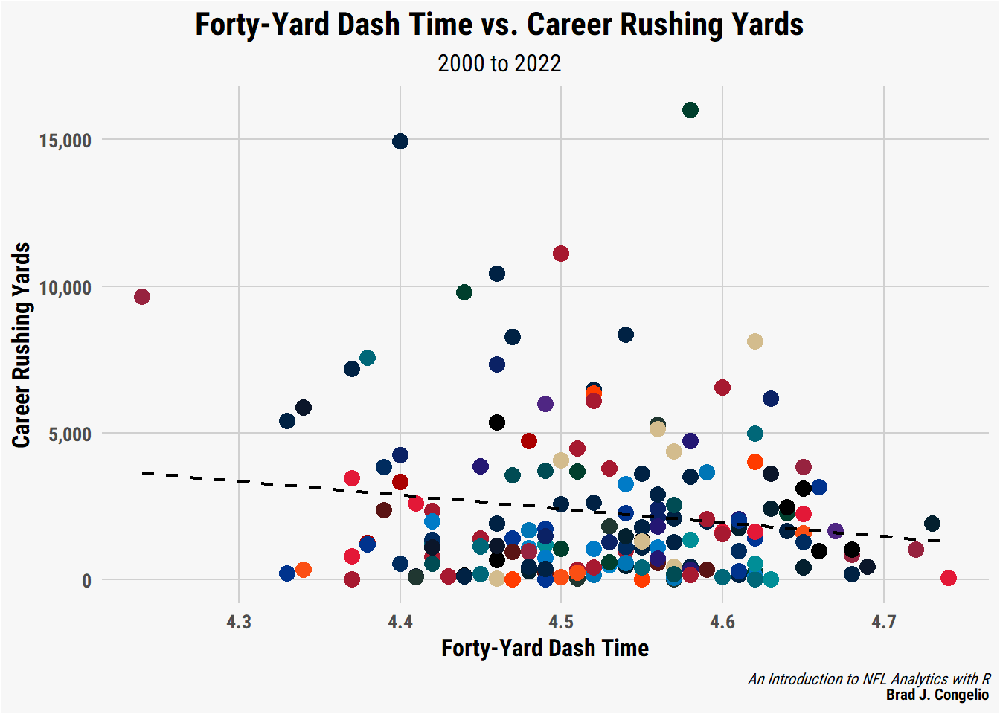

4 NFL Analytics with the nflverse Family of Packages
As mentioned in the Preface of this book, the nflverse has drastically expanded since the inception of nflfastR in April of 2020. In total, the current version of the nflverse is comprised of five separate R packages:
nflfastRnflseedRnfl4thnflreadrnflplotR
Installing the nflverse as a package in R will automatically install all five packages. However, the core focus of this book will be on nflreadr. It is understandable if you are confused by that, since the Preface of this book introduced the nflfastR package. The nflreadr package, as explained by its author (Tan Ho), is a “minimal package for downloading data from nflverse repositories.” The data that is the nflverse is stored across five different GitHub repositories. Using nflreadr allows for easy access to any of these data sources. For lack of a better term, nflreadr acts as a shortcut of sorts while also operating with less dependencies.
As you will see in this chapter, using nflreadr:: while coding provides nearly identical functions to those available when using nflfastR::. In fact, nflfastR::, in many instances, now calls, “under the hood,” the equivalent function in nflreadr::. Because of the coalescing between the two, many of the new functions being developed are available only when using nflreadr::. For example, nflreadr:: allows you to access data pertaining to the NFL Combine, draft picks, contracts, trades, injury information, and access to statistics on Pro Football Reference.
While nflfastR did initially serve as the foundation of the “amateur NFL analytics” movement, the nflreadr package has superseded it and now serves as the “catchall” package for all the various bits and pieces of the nflverse. Because of this, and to maintain consistency throughout, this book - nearly exclusively - will use nflreadr:: when calling functions housed within the nflverse rather than nflfastR::.
The below diagram visualizes the relationship between nflfastR and nflreadr.
The purpose of this chapter is to explore nflreadr data in an introductory fashion using, what I believe, are the two most important functions in the nflverse: (1.) load_player_stats() and (2.) load_pbp(). It makes the assumption that you are versed in the R programming language. If you are not, please start with Chapter 2 where you can learn about R and the tidyverse language using examples from the nflverse.
4.1 nflreadr: An Introduction to the Data
The most important part of the nflverse is, of course, the data. To begin, we will examine the core data that underpins the nflverse: weekly player stats and the more detailed play-by–play data. Using nflreadr, the end user is able to collect weekly top-level stats via the load_player_stats() function or the much more robust play-by-play numbers by using the load_pbp() function.
As you may imagine, there is a very important distinction between the load_player_stats() and load_pbp(). As mentioned, load_player_stats() will provide you with weekly, pre-calculated statistics for either offense or kicking. Conversely, load_pbp() will provide over 350 metrics for every single play of every single game dating back to 1999.
The load_player_stats() function includes the following offensive information:
offensive.stats <- nflreadr::load_player_stats(2021)
ls(offensive.stats) [1] "air_yards_share" "attempts"
[3] "carries" "completions"
[5] "dakota" "fantasy_points"
[7] "fantasy_points_ppr" "headshot_url"
[9] "interceptions" "pacr"
[11] "passing_2pt_conversions" "passing_air_yards"
[13] "passing_epa" "passing_first_downs"
[15] "passing_tds" "passing_yards"
[17] "passing_yards_after_catch" "player_display_name"
[19] "player_id" "player_name"
[21] "position" "position_group"
[23] "racr" "receiving_2pt_conversions"
[25] "receiving_air_yards" "receiving_epa"
[27] "receiving_first_downs" "receiving_fumbles"
[29] "receiving_fumbles_lost" "receiving_tds"
[31] "receiving_yards" "receiving_yards_after_catch"
[33] "recent_team" "receptions"
[35] "rushing_2pt_conversions" "rushing_epa"
[37] "rushing_first_downs" "rushing_fumbles"
[39] "rushing_fumbles_lost" "rushing_tds"
[41] "rushing_yards" "sack_fumbles"
[43] "sack_fumbles_lost" "sack_yards"
[45] "sacks" "season"
[47] "season_type" "special_teams_tds"
[49] "target_share" "targets"
[51] "week" "wopr" As well, switching the stat_type to “kicking” provides the following information:
kicking.stats <- nflreadr::load_player_stats(2021, stat_type = "kicking")
ls(kicking.stats) [1] "fg_att" "fg_blocked" "fg_blocked_distance"
[4] "fg_blocked_list" "fg_long" "fg_made"
[7] "fg_made_0_19" "fg_made_20_29" "fg_made_30_39"
[10] "fg_made_40_49" "fg_made_50_59" "fg_made_60_"
[13] "fg_made_distance" "fg_made_list" "fg_missed"
[16] "fg_missed_0_19" "fg_missed_20_29" "fg_missed_30_39"
[19] "fg_missed_40_49" "fg_missed_50_59" "fg_missed_60_"
[22] "fg_missed_distance" "fg_missed_list" "fg_pct"
[25] "gwfg_att" "gwfg_blocked" "gwfg_distance"
[28] "gwfg_made" "gwfg_missed" "pat_att"
[31] "pat_blocked" "pat_made" "pat_missed"
[34] "pat_pct" "player_id" "player_name"
[37] "season" "season_type" "team"
[40] "week" While the data returned is not as rich as the play-by-play data we will covering next, the load_player_stats() function is extremely helpful when you need to quickly (and correctly!) recreate the official stats listed on either the NFL’s website or on Pro Football Reference.
As an example, let’s say you need to get Ben Roethlisberger’s total passing yard and attempts from the 2021 season. You could do so via load_pbp() but, if you do not need further context, using load_player_stats() is much more efficient.
4.1.1 Getting Weekly Player Stats via load_player_stats()
If you are familiar with R, it might seem logical to do the following to get Roethlisberger’s total passing yards and number of attempts from the 2021 regular season:
weekly.data <- nflreadr::load_player_stats(2021)
ben.weekly <- weekly.data %>%
group_by(player_id, player_name) %>%
filter(season_type == "REG" & player_name == "B.Roethlisberger") %>%
summarize(total.yards = sum(passing_yards),
n.attempts = sum(attempts))
tibble(ben.weekly)# A tibble: 1 x 4
player_id player_name total.yards n.attempts
<chr> <chr> <dbl> <int>
1 00-0022924 B.Roethlisberger 3740 605As you can see in the ben.weekly output, we have matched his official 2021 regular stats perfectly with 3,740 passing yards on 605 attempts. The code we just created is doing several things. First, we are using nflreadr::load_player_stats(2021) to place the data into our R environment in a DF titled weekly.data.
Next, we group the data together by alike player_id (as every individual player has a unique ID number) as well as the player’s actual name. At the filtering level, we are looking for just the regular season (REG) within season_type and also removing all quarterbacks except for Ben Roethlisberger. It is important to note that player names are just first initial and last name, without a space after the period.
After filtering for the regular season, we are able to summarize all of the weekly data into combined statistics by summing the weekly totals of passing yards and attempts.
However, filtering by player_name can lead to significant issues with your results. An excellent example of this is Josh Allen. Let’s recreate the code above that successfully provided Roethlisberger’s stats, but replace Ben with Josh Allen:
josh.allen <- weekly.data %>%
group_by(player_name) %>%
filter(player_name == "J.Allen" & season_type == "REG") %>%
summarize(total.yards = sum(passing_yards),
n.attempts = sum(attempts))
tibble(josh.allen)# A tibble: 1 x 3
player_name total.yards n.attempts
<chr> <dbl> <int>
1 J.Allen 4407 646The output tells us Allen threw for 4,049 yards on 603 attempts during the 2021 regular season. A check of his Pro Football Reference page tells us those numbers are incorrect. In fact, he had 4,407 passing yards on 646 attempts. How did we end up 358 passing yards and 43 attempts short?
The answer comes from Aaron Schatz, the creator of Football Outsiders, who explained in a Tweet that the official Buffalo Bills’ scorer, during week 3 of the NFL season, decided to refer to Allen as “Jos.Allen” as a result of the Washington Commanders having a player named “Jonathan Allen.”
To double check this, we can run the same code as above, but remove the player_name filter and switch to searching for just those players on the Buffalo Bills by using recent_team.
two.josh.allens <- weekly.data %>%
group_by(player_id, player_name) %>%
filter(season_type == "REG" & recent_team == "BUF") %>%
summarize(total.yards = sum(passing_yards),
n.attempts = sum(attempts))
tibble(two.josh.allens)# A tibble: 16 x 4
player_id player_name total.yards n.attempts
<chr> <chr> <dbl> <int>
1 00-0027685 E.Sanders 0 0
2 00-0029000 C.Beasley 0 1
3 00-0031588 S.Diggs 0 0
4 00-0031787 J.Kumerow 0 0
5 00-0033308 M.Breida 0 0
6 00-0033466 I.McKenzie 0 0
7 00-0033550 D.Webb 0 0
8 00-0033869 M.Trubisky 43 8
9 00-0033904 D.Dawkins 0 0
10 00-0034857 J.Allen 4407 646
11 00-0035250 D.Singletary 0 0
12 00-0035308 T.Sweeney 0 0
13 00-0035689 D.Knox 0 0
14 00-0036187 R.Gilliam 0 0
15 00-0036196 G.Davis 0 0
16 00-0036251 Z.Moss 0 0Grouping by player_id and player_name (as well as filtering down to Buffalo), we can see that, indeed, Josh Allen is in the data twice under the same player_id. Moreover, if you do the math, you can see that the numbers from his two entries add up to the official statistics on his Pro Football Reference page.
4.1.1.1 Using load_player_stats() Correctly
To avoid these situations, you could load up NFL rosters via the nflreadr::load_rosters() function, but that would require unnecessary code in order to merge the two DFs together by matching the player_id to the gsis_id number found within the roster information. Doing so would correct the above issue of Josh Allen appearing in the data under different spellings. Instead, and to write the minimal amount of code to complete the task, we can do the following:
The most efficient way to gather correct player statistics is to do the group_by with ONLY the player_id as, despite the variation in name, the player_id remained the same for Josh Allen. In order to include his correct name in the output, we can gather QB names within the summarize prior to calculating the sum of passing_yards and attempts. After, if you desire to see only Josh Allen’s number, you can filter out to just his name.
4.1.2 Using load_player_stats() To Find Leaders
While using load_player_stats() does not provide the ability to add context to your analysis as we will soon see with load_pbp(), it does provide an easy and efficient way to determine weekly or season-long leaders over many top-level, widely-used NFL statistics. In the below example, we will determine the 2021 leaders in air yards per attempt.
4.1.2.1 An Example: 2021 QB Air Yards per Attempt Leaders
data <- nflreadr::load_player_stats(2021)
ay.per.attempt <- data %>%
group_by(player_id) %>%
filter(season_type == "REG") %>%
summarize(player_name = first(player_name),
n.attempts = sum(attempts),
n.airyards = sum(passing_air_yards),
ay.attempt = n.airyards / n.attempts) %>%
filter(n.attempts >= 400) %>%
select(player_name, ay.attempt) %>%
arrange(-ay.attempt)In the above example, we are using group_by to combine the desired statistics based on each unique player_id to, again, avoid any issues with player names within the data. After filtering to include just those statistics for the regular season, we first use the summarize function to grab the first player_name associated with the player_id. After, we find two items: (1.) the total number of passing attempts by each QB which is outputted into a new row titled n.attempts and the regular season total of each QB’s air yards, again outputted into a new row titled n.airyards.
It is important to note that the final row created with the summarize function is not a statistic included within load_player_stats(). In order to find a QB’s average air yards per attempt, we must use the first two items we’ve created and do some simple division (the created n.airyards divided by n.attempts).
Finally, to “clear the noise” of those QBs with minimal attempts through the season, we included a filter to include only those passers with at least 400 attempts. After, we arrange the new DF by sorting the QBs in descending order by average air yards per attempt.
The end results look like this:
# A tibble: 25 x 2
player_name ay.attempt
<chr> <dbl>
1 R.Wilson 9.89
2 J.Hurts 8.99
3 B.Mayfield 8.73
4 M.Stafford 8.48
5 J.Allen 8.20
6 K.Cousins 8.16
7 J.Burrow 8.12
8 D.Carr 8.12
9 T.Brady 8.10
10 T.Bridgewater 8.04
# ... with 15 more rowsRussell Wilson led the NFL in 2021 with 9.89 air yards per attempt.
4.2 Using load_pbp() to Add Context to Statistics
As just mentioned above, using the load_pbp() function is preferable when you are looking to add context to a player’s statistics, as the load_player_stats() function is, for all intents and purposes, aggregated statistics that limit your ability to find deeper meaning.
The load_pbp() function provides over 350 various metrics, as listed below:
[1] "aborted_play"
[2] "air_epa"
[3] "air_wpa"
[4] "air_yards"
[5] "assist_tackle"
[6] "assist_tackle_1_player_id"
[7] "assist_tackle_1_player_name"
[8] "assist_tackle_1_team"
[9] "assist_tackle_2_player_id"
[10] "assist_tackle_2_player_name"
[11] "assist_tackle_2_team"
[12] "assist_tackle_3_player_id"
[13] "assist_tackle_3_player_name"
[14] "assist_tackle_3_team"
[15] "assist_tackle_4_player_id"
[16] "assist_tackle_4_player_name"
[17] "assist_tackle_4_team"
[18] "away_coach"
[19] "away_score"
[20] "away_team"
[21] "away_timeouts_remaining"
[22] "away_wp"
[23] "away_wp_post"
[24] "blocked_player_id"
[25] "blocked_player_name"
[26] "comp_air_epa"
[27] "comp_air_wpa"
[28] "comp_yac_epa"
[29] "comp_yac_wpa"
[30] "complete_pass"
[31] "cp"
[32] "cpoe"
[33] "def_wp"
[34] "defensive_extra_point_attempt"
[35] "defensive_extra_point_conv"
[36] "defensive_two_point_attempt"
[37] "defensive_two_point_conv"
[38] "defteam"
[39] "defteam_score"
[40] "defteam_score_post"
[41] "defteam_timeouts_remaining"
[42] "desc"
[43] "div_game"
[44] "down"
[45] "drive"
[46] "drive_end_transition"
[47] "drive_end_yard_line"
[48] "drive_ended_with_score"
[49] "drive_first_downs"
[50] "drive_game_clock_end"
[51] "drive_game_clock_start"
[52] "drive_inside20"
[53] "drive_play_count"
[54] "drive_play_id_ended"
[55] "drive_play_id_started"
[56] "drive_quarter_end"
[57] "drive_quarter_start"
[58] "drive_real_start_time"
[59] "drive_start_transition"
[60] "drive_start_yard_line"
[61] "drive_time_of_possession"
[62] "drive_yards_penalized"
[63] "end_clock_time"
[64] "end_yard_line"
[65] "ep"
[66] "epa"
[67] "extra_point_attempt"
[68] "extra_point_prob"
[69] "extra_point_result"
[70] "fantasy"
[71] "fantasy_id"
[72] "fantasy_player_id"
[73] "fantasy_player_name"
[74] "fg_prob"
[75] "field_goal_attempt"
[76] "field_goal_result"
[77] "first_down"
[78] "first_down_pass"
[79] "first_down_penalty"
[80] "first_down_rush"
[81] "fixed_drive"
[82] "fixed_drive_result"
[83] "forced_fumble_player_1_player_id"
[84] "forced_fumble_player_1_player_name"
[85] "forced_fumble_player_1_team"
[86] "forced_fumble_player_2_player_id"
[87] "forced_fumble_player_2_player_name"
[88] "forced_fumble_player_2_team"
[89] "fourth_down_converted"
[90] "fourth_down_failed"
[91] "fumble"
[92] "fumble_forced"
[93] "fumble_lost"
[94] "fumble_not_forced"
[95] "fumble_out_of_bounds"
[96] "fumble_recovery_1_player_id"
[97] "fumble_recovery_1_player_name"
[98] "fumble_recovery_1_team"
[99] "fumble_recovery_1_yards"
[100] "fumble_recovery_2_player_id"
[101] "fumble_recovery_2_player_name"
[102] "fumble_recovery_2_team"
[103] "fumble_recovery_2_yards"
[104] "fumbled_1_player_id"
[105] "fumbled_1_player_name"
[106] "fumbled_1_team"
[107] "fumbled_2_player_id"
[108] "fumbled_2_player_name"
[109] "fumbled_2_team"
[110] "game_date"
[111] "game_half"
[112] "game_id"
[113] "game_seconds_remaining"
[114] "game_stadium"
[115] "goal_to_go"
[116] "half_sack_1_player_id"
[117] "half_sack_1_player_name"
[118] "half_sack_2_player_id"
[119] "half_sack_2_player_name"
[120] "half_seconds_remaining"
[121] "home_coach"
[122] "home_opening_kickoff"
[123] "home_score"
[124] "home_team"
[125] "home_timeouts_remaining"
[126] "home_wp"
[127] "home_wp_post"
[128] "id"
[129] "incomplete_pass"
[130] "interception"
[131] "interception_player_id"
[132] "interception_player_name"
[133] "jersey_number"
[134] "kick_distance"
[135] "kicker_player_id"
[136] "kicker_player_name"
[137] "kickoff_attempt"
[138] "kickoff_downed"
[139] "kickoff_fair_catch"
[140] "kickoff_in_endzone"
[141] "kickoff_inside_twenty"
[142] "kickoff_out_of_bounds"
[143] "kickoff_returner_player_id"
[144] "kickoff_returner_player_name"
[145] "lateral_interception_player_id"
[146] "lateral_interception_player_name"
[147] "lateral_kickoff_returner_player_id"
[148] "lateral_kickoff_returner_player_name"
[149] "lateral_punt_returner_player_id"
[150] "lateral_punt_returner_player_name"
[151] "lateral_receiver_player_id"
[152] "lateral_receiver_player_name"
[153] "lateral_receiving_yards"
[154] "lateral_reception"
[155] "lateral_recovery"
[156] "lateral_return"
[157] "lateral_rush"
[158] "lateral_rusher_player_id"
[159] "lateral_rusher_player_name"
[160] "lateral_rushing_yards"
[161] "lateral_sack_player_id"
[162] "lateral_sack_player_name"
[163] "location"
[164] "name"
[165] "nfl_api_id"
[166] "no_huddle"
[167] "no_score_prob"
[168] "old_game_id"
[169] "opp_fg_prob"
[170] "opp_safety_prob"
[171] "opp_td_prob"
[172] "order_sequence"
[173] "out_of_bounds"
[174] "own_kickoff_recovery"
[175] "own_kickoff_recovery_player_id"
[176] "own_kickoff_recovery_player_name"
[177] "own_kickoff_recovery_td"
[178] "pass"
[179] "pass_attempt"
[180] "pass_defense_1_player_id"
[181] "pass_defense_1_player_name"
[182] "pass_defense_2_player_id"
[183] "pass_defense_2_player_name"
[184] "pass_length"
[185] "pass_location"
[186] "pass_oe"
[187] "pass_touchdown"
[188] "passer"
[189] "passer_id"
[190] "passer_jersey_number"
[191] "passer_player_id"
[192] "passer_player_name"
[193] "passing_yards"
[194] "penalty"
[195] "penalty_player_id"
[196] "penalty_player_name"
[197] "penalty_team"
[198] "penalty_type"
[199] "penalty_yards"
[200] "play"
[201] "play_clock"
[202] "play_deleted"
[203] "play_id"
[204] "play_type"
[205] "play_type_nfl"
[206] "posteam"
[207] "posteam_score"
[208] "posteam_score_post"
[209] "posteam_timeouts_remaining"
[210] "posteam_type"
[211] "punt_attempt"
[212] "punt_blocked"
[213] "punt_downed"
[214] "punt_fair_catch"
[215] "punt_in_endzone"
[216] "punt_inside_twenty"
[217] "punt_out_of_bounds"
[218] "punt_returner_player_id"
[219] "punt_returner_player_name"
[220] "punter_player_id"
[221] "punter_player_name"
[222] "qb_dropback"
[223] "qb_epa"
[224] "qb_hit"
[225] "qb_hit_1_player_id"
[226] "qb_hit_1_player_name"
[227] "qb_hit_2_player_id"
[228] "qb_hit_2_player_name"
[229] "qb_kneel"
[230] "qb_scramble"
[231] "qb_spike"
[232] "qtr"
[233] "quarter_end"
[234] "quarter_seconds_remaining"
[235] "receiver"
[236] "receiver_id"
[237] "receiver_jersey_number"
[238] "receiver_player_id"
[239] "receiver_player_name"
[240] "receiving_yards"
[241] "replay_or_challenge"
[242] "replay_or_challenge_result"
[243] "result"
[244] "return_team"
[245] "return_touchdown"
[246] "return_yards"
[247] "roof"
[248] "run_gap"
[249] "run_location"
[250] "rush"
[251] "rush_attempt"
[252] "rush_touchdown"
[253] "rusher"
[254] "rusher_id"
[255] "rusher_jersey_number"
[256] "rusher_player_id"
[257] "rusher_player_name"
[258] "rushing_yards"
[259] "sack"
[260] "sack_player_id"
[261] "sack_player_name"
[262] "safety"
[263] "safety_player_id"
[264] "safety_player_name"
[265] "safety_prob"
[266] "score_differential"
[267] "score_differential_post"
[268] "season"
[269] "season_type"
[270] "series"
[271] "series_result"
[272] "series_success"
[273] "shotgun"
[274] "side_of_field"
[275] "solo_tackle"
[276] "solo_tackle_1_player_id"
[277] "solo_tackle_1_player_name"
[278] "solo_tackle_1_team"
[279] "solo_tackle_2_player_id"
[280] "solo_tackle_2_player_name"
[281] "solo_tackle_2_team"
[282] "sp"
[283] "special"
[284] "special_teams_play"
[285] "spread_line"
[286] "st_play_type"
[287] "stadium"
[288] "stadium_id"
[289] "start_time"
[290] "success"
[291] "surface"
[292] "tackle_for_loss_1_player_id"
[293] "tackle_for_loss_1_player_name"
[294] "tackle_for_loss_2_player_id"
[295] "tackle_for_loss_2_player_name"
[296] "tackle_with_assist"
[297] "tackle_with_assist_1_player_id"
[298] "tackle_with_assist_1_player_name"
[299] "tackle_with_assist_1_team"
[300] "tackle_with_assist_2_player_id"
[301] "tackle_with_assist_2_player_name"
[302] "tackle_with_assist_2_team"
[303] "tackled_for_loss"
[304] "td_player_id"
[305] "td_player_name"
[306] "td_prob"
[307] "td_team"
[308] "temp"
[309] "third_down_converted"
[310] "third_down_failed"
[311] "time"
[312] "time_of_day"
[313] "timeout"
[314] "timeout_team"
[315] "total"
[316] "total_away_comp_air_epa"
[317] "total_away_comp_air_wpa"
[318] "total_away_comp_yac_epa"
[319] "total_away_comp_yac_wpa"
[320] "total_away_epa"
[321] "total_away_pass_epa"
[322] "total_away_pass_wpa"
[323] "total_away_raw_air_epa"
[324] "total_away_raw_air_wpa"
[325] "total_away_raw_yac_epa"
[326] "total_away_raw_yac_wpa"
[327] "total_away_rush_epa"
[328] "total_away_rush_wpa"
[329] "total_away_score"
[330] "total_home_comp_air_epa"
[331] "total_home_comp_air_wpa"
[332] "total_home_comp_yac_epa"
[333] "total_home_comp_yac_wpa"
[334] "total_home_epa"
[335] "total_home_pass_epa"
[336] "total_home_pass_wpa"
[337] "total_home_raw_air_epa"
[338] "total_home_raw_air_wpa"
[339] "total_home_raw_yac_epa"
[340] "total_home_raw_yac_wpa"
[341] "total_home_rush_epa"
[342] "total_home_rush_wpa"
[343] "total_home_score"
[344] "total_line"
[345] "touchback"
[346] "touchdown"
[347] "two_point_attempt"
[348] "two_point_conv_result"
[349] "two_point_conversion_prob"
[350] "vegas_home_wp"
[351] "vegas_home_wpa"
[352] "vegas_wp"
[353] "vegas_wpa"
[354] "weather"
[355] "week"
[356] "wind"
[357] "wp"
[358] "wpa"
[359] "xpass"
[360] "xyac_epa"
[361] "xyac_fd"
[362] "xyac_mean_yardage"
[363] "xyac_median_yardage"
[364] "xyac_success"
[365] "yac_epa"
[366] "yac_wpa"
[367] "yardline_100"
[368] "yards_after_catch"
[369] "yards_gained"
[370] "ydsnet"
[371] "ydstogo"
[372] "yrdln" A bit overwhelming, right?
Luckily, the nflfastR website includes a searchable directory of all the variables with a brief description of what each one means. You can visit that here: nflfastR Field Descriptions.
As seen above, we can use the load_player_stats() function to determine a QB’s average yards per attempt over the course of a season. But, what if we wanted to add context to that? For example, how do we explore a QB’s air yards in game-specific situations?
To showcase using load_pbp() to add context to your analysis, let’s explore QB performance via air yards on 3rd down.
4.2.1 An Example: QB Aggressiveness on 3rd Down
Sticking with the air yards example from above, let’s examine a metric I created using load_pbp() that I coined QB 3rd Down Aggressiveness. The metric is designed to determine which QBs in the NFL are most aggressive in 3rd down situations by gauging how often they throw the ball to, or pass, the first down line. It is an interesting metric to explore as, just like many metrics in the NFL, not all air yards are created equal. For example, eight air yards on 1st and 10 are less valuable than the same eight air yards on 3rd and 5.
First, let’s highlight the code used to create the results for this metric and then break it down line-by-line.
data <- nflreadr::load_pbp(2021)
aggressiveness <- data %>%
group_by(passer_id) %>%
filter(down == 3, play_type == "pass", ydstogo >= 5, ydstogo <= 10) %>%
summarize(player_name = first(passer),
team = first(posteam),
total = n(),
aggressive = sum(air_yards >= ydstogo, na.rm = TRUE),
percentage = aggressive / total) %>%
filter(total >= 50) %>%
arrange(-percentage)
tibble(aggressiveness)# A tibble: 30 x 6
passer_id player_name team total aggressive percentage
<chr> <chr> <chr> <int> <int> <dbl>
1 00-0033077 D.Prescott DAL 84 53 0.631
2 00-0035228 K.Murray ARI 60 37 0.617
3 00-0036389 J.Hurts PHI 65 40 0.615
4 00-0033873 P.Mahomes KC 93 56 0.602
5 00-0034855 B.Mayfield CLE 59 35 0.593
6 00-0036971 T.Lawrence JAX 78 46 0.590
7 00-0036355 J.Herbert LAC 87 51 0.586
8 00-0035710 D.Jones NYG 60 35 0.583
9 00-0036212 T.Tagovailoa MIA 60 35 0.583
10 00-0026498 M.Stafford LA 95 54 0.568
# ... with 20 more rowsAs you can see in the tibble() output of the results, Dak Prescott was the most aggressive quarterback in 3rd down passing situations in the 2021 season, passing to, our beyond, the line of gain just over 63% of the time.
After creating a new dataframe called aggressiveness from the 2021 play-by-play we originally collected using data <- nflreadr::load_pbp(2021), we use group_by to ensure that the data is being collected per individual quarterback via passer_id.
After using the group_by function to lump data with each individual QB, we then use filter() function. Of course, we only want those play_types that are “pass” on 3rd downs. However, in the above code, we are filtering for just those 3rd down situations where the yards to go are between five and ten yards.
Doing so was a personal decision on my end when creating the metric, as there are certainly arguments to be made regarding how to “capture” scenarios in the data that require “aggressiveness.” My logic? If there were less than five yards to go on 3rd down, the opposing defense would not be able to “sell out” to the pass as it would not be out of the question for an offense to attempt to gain the first down on the ground. Conversely, anything over ten yards likely results in the defense selling out to the pass, thus leaving an imprint on the aggressiveness output of the quarterbacks.
For the sake of curiosity, we can edit the above code to include all passing attempts on 3rd down with under 10 yards to go for the first down:
aggressiveness.under.10 <- data %>%
group_by(passer_id) %>%
filter(down == 3, play_type == "pass", ydstogo <= 10) %>%
summarize(player_name = first(passer),
team = first(posteam),
total = n(),
aggressive = sum(air_yards >= ydstogo, na.rm = TRUE),
percentage = aggressive / total) %>%
filter(total >= 50) %>%
arrange(desc(percentage))
tibble(aggressiveness.under.10)# A tibble: 33 x 6
passer_id player_name team total aggressive percentage
<chr> <chr> <chr> <int> <int> <dbl>
1 00-0035228 K.Murray ARI 98 67 0.684
2 00-0036389 J.Hurts PHI 107 73 0.682
3 00-0036971 T.Lawrence JAX 131 88 0.672
4 00-0033077 D.Prescott DAL 136 89 0.654
5 00-0034857 J.Allen BUF 138 88 0.638
6 00-0036355 J.Herbert LAC 148 94 0.635
7 00-0036212 T.Tagovailoa MIA 93 59 0.634
8 00-0026498 M.Stafford LA 172 109 0.634
9 00-0023459 A.Rodgers GB 128 80 0.625
10 00-0035710 D.Jones NYG 85 53 0.624
# ... with 23 more rowsThe results are quite different from the first running of this metric, as Dak Prescott is now the 4th most aggressive QB, while Kyler Murray moves to the top by approaching a nearly 70% aggressiveness rate on 3rd down. This small change highlights an important element about analytics: much of the work is the result of the coder (ie., you) being able to justify your decision-making process when developing the filters for each metric you create.
In this case, I stand by my argument that including just those pass attempts on 3rd down with between 5 and 10 yards to go is a more accurate assessment of aggressiveness as, for example, 3rd down with 8 yards to go is an obvious passing situation in most cases.
That begs the question, though: in which cases is 3rd down with 8 yards to go not an obvious passing situation? An example of this falls under the guise of “garbage time.”
4.2.1.1 QB Aggressiveness: Filtering for “Garbage Time?”
In our initial running of the QB Aggressiveness metric, Josh Allen is the 15th most aggressive QB in the NFL on 3rd down with between 5 and 10 yards to go. But how much does the success of the Buffalo Bills play into that 15th place ranking?
The Bills, at the conclusion of the 2021 season, had the largest positive point differential in the league at 194 (the Bills scored 483 points, while allowing just 289). Perhaps Allen’s numbers are skewed because the Bills were so often playing with the lead late into the game?
To account for this, we can add information into the filter() function to attempt to remove what are referenced to in the analytics community as “garbage time stats.”
Let’s add the “garbage time” filter to the code we’ve already prepared:
aggressiveness.garbage <- data %>%
group_by(passer_id) %>%
filter(down == 3, play_type == "pass", ydstogo >= 5, ydstogo <= 10,
wp > .05, wp < .95, half_seconds_remaining > 120) %>%
summarize(player_name = first(passer),
team = first(posteam),
total = n(),
aggressive = sum(air_yards >= ydstogo, na.rm = TRUE),
percentage = aggressive / total) %>%
filter(total >= 50) %>%
arrange(desc(percentage))
tibble(aggressiveness.garbage)# A tibble: 26 x 6
passer_id player_name team total aggressive percentage
<chr> <chr> <chr> <int> <int> <dbl>
1 00-0033077 D.Prescott DAL 61 40 0.656
2 00-0036971 T.Lawrence JAX 51 33 0.647
3 00-0035228 K.Murray ARI 51 31 0.608
4 00-0026498 M.Stafford LA 79 48 0.608
5 00-0033873 P.Mahomes KC 68 41 0.603
6 00-0035710 D.Jones NYG 50 30 0.6
7 00-0036355 J.Herbert LAC 67 38 0.567
8 00-0036972 M.Jones NE 57 31 0.544
9 00-0034857 J.Allen BUF 59 32 0.542
10 00-0029263 R.Wilson SEA 56 30 0.536
# ... with 16 more rowsWe are now using the same code, but have included three new items to the filter(). First, we are stipulating that, aside from the down and distance inclusion, we only want those plays that occurred when the offense’s win probability was between 5% and 95%, as well as ensuring that the plays did not happen after the two-minute warning of either half.
The decision on range of the win probability numbers is, again, a personal preference. When nflfastR was first released, analyst often used a 20-80% range for win probability. However, Sebastian Carl - one of the creators of the nflverse explained in the package’s Discord:
Sebastian Carl: “I am generally very conservative with filtering plays using wp. Especially the vegas wp model can reach >85% probs early in the game because it incorporates market lines. I never understood the 20% <= wp <= 80%”garbage time” filter. This is removing a ton of plays. My general advice is a lower boundary of something around 5% (i.e., 5% <= wp <= 95%).
Ben Baldwin followed up on Carl’s thoughts:
Ben Baldwin: “agree with this. 20-80% should only be used as a filter for looking at how run-heavy a team is (because outside of this range is when teams change behavior a lot). and possibly how teams behave on 4th downs. but not for team or player performance.”
Based on that advice, I typically stick to the 5-95% range when filtering for win probability using play-by-play data. And, in this case, it did have an impact.
As mentioned, prior to filtering for garbage time, Allen was the 15th most aggressive QB in the league at nearly 52%. However, once filtering for garbage time, Allen rose to 9th most aggressive QB, with a slight increase of percentage to 54%.
What is interesting about the above example, though, is Dak Prescott and the Cowboys. Dallas maintained the second largest point differential in the league (530 points for and 358 points against, for a 172 point difference). Without the garbage time filter, Prescott was tops in the NFL with an aggressiveness rating of 63%.
Once adjusted for garbage time? Prescott remained atop the NFL with an aggressiveness rating of 65.5%.
Allen’s increase in the standings, and Prescott remaining best in the league, in this specific metric, is a possible indicator that the inclusion of the “garbage time” filters provides a slightly more accurate result.
4.2.2 The Inclusion of Contextual Statistics
As seen in the above example regarding QB aggressiveness on 3rd down, the using of the load_pbp() function provides the ability to create situation specific metrics that would otherwise be lost in aggregated weekly statistics.
4.3 Retrieving & Working With Data for Multiple Seasons
In the case of both load_pbp() and load_player_stats(), it is possible to load data over multiple seasons.
In our above example calculating average air yard per attempt, it is important to note that Russell Wilson’s league-leading average of 9.89 air yards per attempt is calculated using all passing attempts, meaning pass attempts that were both complete and incomplete.
In our first example of working with data across multiple seasons, let’s examine average air yards for only completed passes. To begin, we will retrieve the play-by-play data for the last five seasons:
ay.five.years <- nflreadr::load_pbp(2017:2021)To retrieve multiple seasons of data, a colon : is placed between the years that you want. When you run the code, nflreadr will output the data to include the play-by-play data starting with the oldest season (in this case, the 2017 NFL season).
Once you have the data collected, we can run code that looks quite similar to our code above that explored 2021’s air yards per attempt leaders using load_player_stats(). In this case, however, we are including an additional filter to gather those passing attempts that resulted only in complete passes:
average.airyards <- ay.five.years %>%
group_by(passer_id) %>%
filter(season_type == "REG" & complete_pass == 1) %>%
summarize(player = first(passer_player_name),
completions = sum(complete_pass),
air.yards = sum(air_yards),
average = air.yards / completions) %>%
filter(completions >= 1000) %>%
arrange(-average)
tibble(average.airyards)# A tibble: 22 x 5
passer_id player completions air.yards average
<chr> <chr> <dbl> <dbl> <dbl>
1 00-0031503 J.Winston 1008 8174 8.11
2 00-0033537 D.Watson 1186 8461 7.13
3 00-0029263 R.Wilson 1603 10939 6.82
4 00-0026143 M.Ryan 1954 13051 6.68
5 00-0034855 B.Mayfield 1185 7858 6.63
6 00-0034857 J.Allen 1245 8221 6.60
7 00-0033077 D.Prescott 1613 10449 6.48
8 00-0026498 M.Stafford 1668 10804 6.48
9 00-0029701 R.Tannehill 1049 6680 6.37
10 00-0032950 C.Wentz 1505 9491 6.31
# ... with 12 more rowsOf those QBs with at least 1,000 complete passes since the 2017 season, Jameis Winston has the highest average air yards per complete pass at 8.11.
4.4 Working with the Various nflreadr Functions
The nflreadr package comes with a multitude of “under the hood” functions designed to provide you with supplemental data, items for data visualization, and utilities for efficiently collecting and storing the data on your system. You can view the entire list of these options using the ls to output all the objects in the package.
ls("package:nflreadr") [1] "clean_homeaway" "clean_player_names"
[3] "clean_team_abbrs" "clear_cache"
[5] "csv_from_url" "dictionary_combine"
[7] "dictionary_contracts" "dictionary_depth_charts"
[9] "dictionary_draft_picks" "dictionary_espn_qbr"
[11] "dictionary_ff_opportunity" "dictionary_ff_playerids"
[13] "dictionary_ff_rankings" "dictionary_injuries"
[15] "dictionary_nextgen_stats" "dictionary_participation"
[17] "dictionary_pbp" "dictionary_pfr_passing"
[19] "dictionary_player_stats" "dictionary_rosters"
[21] "dictionary_schedules" "dictionary_snap_counts"
[23] "dictionary_trades" "ffverse_sitrep"
[25] "get_current_season" "get_current_week"
[27] "get_latest_season" "join_coalesce"
[29] "load_combine" "load_contracts"
[31] "load_depth_charts" "load_draft_picks"
[33] "load_espn_qbr" "load_ff_opportunity"
[35] "load_ff_playerids" "load_ff_rankings"
[37] "load_from_url" "load_injuries"
[39] "load_nextgen_stats" "load_officials"
[41] "load_participation" "load_pbp"
[43] "load_pfr_advstats" "load_pfr_passing"
[45] "load_player_stats" "load_players"
[47] "load_rosters" "load_rosters_weekly"
[49] "load_schedules" "load_snap_counts"
[51] "load_teams" "load_trades"
[53] "most_recent_season" "nflverse_download"
[55] "nflverse_game_id" "nflverse_releases"
[57] "nflverse_sitrep" "parquet_from_url"
[59] "player_name_mapping" "progressively"
[61] "qs_from_url" "raw_from_url"
[63] "rbindlist_with_attrs" "rds_from_url"
[65] "team_abbr_mapping" "team_abbr_mapping_norelocate"Going forward in this chapter, we will be exploring specific use cases for the functions provided by nflreadr - but not all of them. For example, the dictionary_ functions can more easily be used directly on the nflreadr website where the package’s maintainers keep a copy of each. Many, like the dictionary for play-by-play data, includes a search feature to allow you to quickly find how the variables you are looking for is provided in the column name. Others, like the clear_cache() function is used only when you want to wipe any memoized data stored by nflreadr - often needed if you are troubleshooting a pesky error message - join_coalesce() which is an experimental function that is only used internally to help build player IDs into the data. The load_pbp() and load_player_stats() function will also not be covered here, as the first portion of this chapter explored the use of both in great detail. We will briefly discuss the use of load_players() and load_rosters() but a more detailed discussion of each is provided in Chapter 4: Data Visualization with NFL Analytics. The remaining functions will be presented in the order provided on the nflreadr function reference website.
4.4.1 The load_participation() Function
The load_participation() function allows us to create a dataframe of player participation data dating back to 2016 with an option to infuse that information into the existing nflreadr play-by-play data. The resulting dataframe, when not including play-by-play data, includes information pertaining to: the individial game ID, the play ID, the possession team, what formation the offense was in, the layout of the offensive personnel, how many defenders were in the box, the defensive personnel, the number of rushers on pass players, and the unique ID number for each player on the field for that specific play.
Despite the load_participation() function being one of the newest editions to the nflreadr package, it is already being used to create contextual analysis regarding a team’s use of its players out out formations. For example, Joseph Hefner uses the data to create tables (built with the gt packages) that calculates not only each player’s rate of usage out of different personnel packages, but how the team’s EPA per play and pass rate fluncuate with each. In the spirit of R’s open-source nature, he also created a Team Formation ShinyApp that allows anybody to explore the data and output the results in .png format.
To build a dataframe of 2022 participation data, that includes complete play-by-play, you must pass both the season and include_pbp argument with the load_participation() function.
participation <- nflreadr::load_participation(season = 2022, include_pbp = TRUE)
participation# A tibble: 49,969 x 383
nflverse_ga~1 play_id posse~2 offen~3 offen~4 defen~5 defen~6 numbe~7 playe~8
<chr> <int> <chr> <chr> <chr> <int> <chr> <int> <chr>
1 2022_01_BAL_~ 1 "" <NA> <NA> NA <NA> NA ""
2 2022_01_BAL_~ 43 "BAL" <NA> <NA> NA <NA> NA "47969~
3 2022_01_BAL_~ 68 "NYJ" SINGLE~ 1 RB, ~ 7 3 DL, ~ NA "53536~
4 2022_01_BAL_~ 89 "NYJ" SHOTGUN 1 RB, ~ 6 3 DL, ~ 4 "53536~
5 2022_01_BAL_~ 115 "NYJ" SINGLE~ 1 RB, ~ 7 3 DL, ~ NA "53536~
6 2022_01_BAL_~ 136 "NYJ" SHOTGUN 1 RB, ~ 7 3 DL, ~ 4 "53536~
7 2022_01_BAL_~ 172 "NYJ" <NA> <NA> NA <NA> NA "53059~
8 2022_01_BAL_~ 202 "BAL" SINGLE~ 2 RB, ~ 7 4 DL, ~ 3 "44929~
9 2022_01_BAL_~ 230 "BAL" SHOTGUN 2 RB, ~ 6 4 DL, ~ 3 "44929~
10 2022_01_BAL_~ 254 "BAL" EMPTY 1 RB, ~ 5 4 DL, ~ NA "44929~
# ... with 49,959 more rows, 374 more variables: offense_players <chr>,
# defense_players <chr>, n_offense <int>, n_defense <int>, old_game_id <chr>,
# home_team <chr>, away_team <chr>, season_type <chr>, week <int>,
# posteam <chr>, posteam_type <chr>, defteam <chr>, side_of_field <chr>,
# yardline_100 <dbl>, game_date <chr>, quarter_seconds_remaining <dbl>,
# half_seconds_remaining <dbl>, game_seconds_remaining <dbl>,
# game_half <chr>, quarter_end <dbl>, drive <dbl>, sp <dbl>, qtr <dbl>, ...Rather than exploring the data at the league-level, let’s take a micro-approach to the participation data and examine the the 2022 Pittsburgh Steelers. It is important to note that the participation data, as gathered using the load_participation() function, is not fully prepped for immediate analysis as the players_on_play, offense_players, and defense_players information (which contains the unique player indentification numbers) are separated by a delimiter (in this case, a semicolon) in what are called “concatenated strings” or “delimited strings.” While this is a compact way to store the values in the core dataframe, it does require us to clean the information through the “splitting” or “tokenizing” process. As you will see in the below code, we are going to place the unique identifiers into separate rows, based on formation, by utilizing the separate_rows() function in tidyr.
Tip
If you use load_participation() but set include_pbp = FALSE it is important to remember that the posteam variable that is part of the play-by-play data will not exist. Instead, the offensive team is indicated by the possession_team column.
If you gather the participation data with play-by-play information, you can use either possession_team or posteam for any filtering.
The same is not true when looking at defensive participation data. A defensive team variable is not provided without included the play-by-play in the data. Once set to TRUE, the defensive team is housed under the typical defteam column.
participation_split <- participation %>%
filter(!is.na(offense_formation)) %>%
filter(posteam == "PIT") %>%
tidyr::separate_rows(offense_players, sep = ";") %>%
group_by(offense_personnel, offense_players) %>%
summarize(total = n()) %>%
ungroup()
participation_split# A tibble: 157 x 3
offense_personnel offense_players total
<chr> <chr> <int>
1 1 RB, 1 TE, 3 WR 00-0032897 3
2 1 RB, 1 TE, 3 WR 00-0033869 262
3 1 RB, 1 TE, 3 WR 00-0034142 37
4 1 RB, 1 TE, 3 WR 00-0034347 781
5 1 RB, 1 TE, 3 WR 00-0034768 781
6 1 RB, 1 TE, 3 WR 00-0034785 744
7 1 RB, 1 TE, 3 WR 00-0034928 235
8 1 RB, 1 TE, 3 WR 00-0035216 745
9 1 RB, 1 TE, 3 WR 00-0035217 25
10 1 RB, 1 TE, 3 WR 00-0035222 258
# ... with 147 more rowsWe are doing quite a few things in the above example:
-
Those rows where the is an ‘NA’ value for
offense_formationare removed. The participation data includes information for kickoffs, extra points, field goals, punts, QB kneels, no plays, and more. It is possible to remove items usingplay_type == "run" | play_type == "pass"but such an approach, if done with the Steelers, results in one fake punt being included in the data (as theplay_typewas listed as “run”). If you wish to include plays such as fake punts, you do so by filtering for only specific play types. -
Only those rows that includes ‘PIT’ as the
posteamare included. -
The
separate_rows()function fromtidyris used to conduct the splitting of the concatenated players identifiers in theoffense_playerscolumn. Theseparate_rows()function needs just to arguments to complete the process - the column name and the delimiter (provided in the argument assep =). -
The newly split data is then grouped by
offense_personnelandoffense_playersin order to calculate the number of times each specific ID was associated with personnel package. The resulting dataframe lists the offense formation type for each player that participated in it, along with the player’s respective participation count.
As is, the load_participation() data does not include any way to further identify players outside of the unique players IDs. Because of this, it is necessary to use the load_rosters() function to include this information (this process is included below in the load_rosters() section).
4.4.2 The load_rosters() and load_rosters_weekly() Functions
The load_rosters() function houses a multitude of useful tools for use in the nflverse. With player information dating back to 1920, load_rosters() will provide you with basic demographic information about each player in the NFL such as their name, birth date, height, weight, the college and high school they attended, and items regarding primary position and depth chart position.
Importantly, load_rosters() also provides the unique identifier for each player over nine different sources: the gsis_id (which is the core ID used in nflverse data), sleeper_id, espn_id, yahoo_id, rotowire_id, pff_id, fantasy_data_id, sportradar_id, and pfr_id. The different IDs become extremely useful when using data collected from outside the nflverse, or when combining data from two outside sources, matching the information can be done by matching the various IDs as needed. As well, as outlined in Chapter 4: Data Visualization with NFL Analytics, the URLs for player headshots are included in load_rosters() data.
Let’s return to our participation_split dataframe that we built prior in this chapter while working with the load_participation() function. The the data is formatted and prepared for analysis, there is no information that allows for easy identification of each player (aside from unique IDs, which is not helpful). To correct this, we can bring in the 2022 Pittsburgh Steelers roster information.
rosters <- nflreadr::load_rosters(2022)The only argument you must provide the load_rosters() function is the years in which you want to collect roster information (in this specific case, 2022). While we know we only want the Steelers’ roster, it is not suggested to use filter() to gather any specific team at this point. Case in point: do so with this example will result in the gsis_id 00-0036326 having an “NA” value for a name, despite having over 380 snaps in the 1 RB, 1TE, 3 WR offensive formation. The player associated with that gsis_id is Chase Claypool, who the Steelers traded to the Bears on November 1 of 2022. Because of this, no player name will be associated with that specific gsis_id on the Steelers’ roster (with the end result being a missing value).
Note
You may notice that the resulting dataframe, titled pit_roster, has 80 players on the roster despite NFL teams only being permitted to have 53 active players at a time.
This is because the information collected with load_rosters() includes not only active players, but those listed on the practice squad and injured reserve. Additionally, you may notice players listed as R/Retired (such as Stephon Tuitt in our dataframe, who retired at the end of the 2022 season). In these situations, this status indicated that the player is listed as ‘reserved-retired’ and that the team continues to hold the player’s rights until the official expiration of their contract. In this case, Tuitt could not come out of retirement prior to his contract ending and play with another team unless first released or traded by Pittsburgh.
Despite the wealth of information in the roster information, only the gsis_id and the full_name is required to complete our participation_split dataframe. Rather than bringing unnecessary information over during the merge, we can select just the two columns we need and then use left_join() to merge each player’s name on the matching ID in the offense_players column and gsis_id from the roster information.
rosters <- nflreadr::load_rosters(2022)
rosters <- rosters %>%
select(gsis_id, full_name)
participation_split <- participation_split %>%
left_join(rosters, by = c("offense_players" = "gsis_id"))
participation_split# A tibble: 157 x 4
offense_personnel offense_players total full_name
<chr> <chr> <int> <chr>
1 1 RB, 1 TE, 3 WR 00-0032897 3 Derek Watt
2 1 RB, 1 TE, 3 WR 00-0033869 262 Mitchell Trubisky
3 1 RB, 1 TE, 3 WR 00-0034142 37 J.C. Hassenauer
4 1 RB, 1 TE, 3 WR 00-0034347 781 James Daniels
5 1 RB, 1 TE, 3 WR 00-0034768 781 Chukwuma Okorafor
6 1 RB, 1 TE, 3 WR 00-0034785 744 Mason Cole
7 1 RB, 1 TE, 3 WR 00-0034928 235 Steven Sims
8 1 RB, 1 TE, 3 WR 00-0035216 745 Diontae Johnson
9 1 RB, 1 TE, 3 WR 00-0035217 25 Benny Snell
10 1 RB, 1 TE, 3 WR 00-0035222 258 Zach Gentry
# ... with 147 more rows
Tip
The load_rosters() data is capable of providing data for multiple seasons at once. Through each season, a player’s gsis_id will remain static. Despite this, when merging multiple years of participation data with multiple years of roster information, the data must be matched on the season variable was well. This process involves including season in both the participation data group_by() and the roster information, as seen below.
participation_multi_years <- load_participation(season = 2018:2022, include_pbp = TRUE)
participation_2018_2022 <- participation_multi_years %>%
filter(!is.na(offense_formation)) %>%
filter(posteam == "PIT") %>%
tidyr::separate_rows(offense_players, sep = ";") %>%
group_by(season, offense_personnel, offense_players) %>%
summarize(total = n())
rosters_2018_2022 <- nflreadr::load_rosters(2018:2022) %>%
select(season, gsis_id, full_name)
participation_2018_2022 <- participation_2018_2022 %>%
left_join(rosters_2018_2022, by = c("season", "offense_players" = "gsis_id"))If your analysis requires providing great granularity, the load_rosters_weekly() function provides the same information as load_rosters() but structures it in weekly format by season (or over multiple seasons, if needed).
4.4.3 The load_teams() Function
A tool heavily used in the data vizualization process, the load_teams() function provides information pertaining to each NFL team’s colors and logos, as well as providing a way to merge dataframes that have differing values for teams. The
4.4.4 The load_schedules() Function
fffff
4.4.5 The load_officials() Function
The load_officials() data will return data, from 2015 to present, outlining which officials were assigned to which game. The data also includes information regarding each referee’s position, jersey number, and their official NFL ID number. Importantly, the data is structured to also include both a game_id and game_key that are sorted by season and week, allowing you to merge the information other dataframes.
With the data, we can - for example - examine which NFL officiating crews called the most penalties during the 2022 NFL season. Doing so requires a bit of work in order to assign a unique crew_id to each stable of officials “working” under a lead referee.
As an example, we can create data frame called nfl_officials that contains the official and referee information for each game during the 2022 season. After, in order to get the referee for each crew, use filter() to select those crew members with the “Referee” position and then create a new column titled crew_id that takes the numeric official ID for each distinct Referee.
nfl_officials <- nflreadr::load_officials(seasons = 2022)
referees <- nfl_officials %>%
filter(position == "Referee") %>%
mutate(crew_id = match(official_id, unique(official_id)))With a unique crew_id associated with each Referee, we can now use left_join() to bring that information back into our nfl_officials data by merging the game_id and crew_id to the corresponding game_id.
nfl_officials <- nfl_officials %>%
left_join(referees %>% select(game_id, crew_id), by = "game_id")The resulting nfl_officials data frame now includes all the original information and now a consistent crew_id for each team that the referee works with.
nfl_officials# A tibble: 2,065 x 10
game_id game_~1 offic~2 posit~3 jerse~4 offic~5 season seaso~6 week crew_id
<chr> <chr> <chr> <chr> <int> <chr> <int> <chr> <int> <int>
1 2022090~ 58838 Nathan~ Field ~ 42 174 2022 REG 1 1
2 2022090~ 58838 Matt E~ Back J~ 96 178 2022 REG 1 1
3 2022090~ 58838 Mike C~ Down J~ 63 168 2022 REG 1 1
4 2022090~ 58838 Eugene~ Side J~ 103 108 2022 REG 1 1
5 2022090~ 58838 Jeff S~ Line J~ 45 23 2022 REG 1 1
6 2022090~ 58838 Carl C~ Referee 51 3 2022 REG 1 1
7 2022090~ 58838 Brando~ Umpire 0 201 2022 REG 1 1
8 2022091~ 58839 Mike M~ Umpire 0 206 2022 REG 1 2
9 2022091~ 58839 John J~ Field ~ 117 86 2022 REG 1 2
10 2022091~ 58839 Danny ~ Down J~ 113 172 2022 REG 1 2
# ... with 2,055 more rows, and abbreviated variable names 1: game_key,
# 2: official_name, 3: position, 4: jersey_number, 5: official_id,
# 6: season_typeTo calculate the total number of penalties flagged by each crew, we must first bring in the play-by-play from the 2022 season. After, we will use filter() to gather only those plays where a flag was thrown, and then select() the relevant columns, and finally summarize() by the old_game_id to get the total penalties called and the total penalty yards as a result of those penalties.
After, we conducted another left_join() to bring in the specific penalty information into our nfl_officials data frame.
penalty_pbp <- nflreadr::load_pbp(seasons = 2022)
penalties <- penalty_pbp %>%
filter(penalty == 1) %>%
select(game_id, old_game_id, season, play_id, desc, home_team, away_team,
posteam, defteam, week, penalty_team, penalty_type, penalty, penalty_player_id,
penalty_player_name, penalty_yards) %>%
group_by(old_game_id) %>%
summarize(total_called = sum(penalty == 1, na.rm = TRUE),
total_yards = sum(penalty_yards, na.rm = TRUE))
nfl_officials <- nfl_officials %>%
left_join(penalties, by = c("game_id" = "old_game_id")) %>%
select(game_id, official_name, position, crew_id, total_called, total_yards)With the data now combined, we can group_by() each game’s unique game_id and then use summarize() to sum the penalties called and the penalty yardage. After descending by the total number of penalties, we can see that Referee Carl Cheffers, and his crew, called the most penalties during the 2022 NFL season with 223 and, unsurprisingly, also had the highest amount of penalty yards with 1,916.
nfl_officials %>%
group_by(game_id) %>%
filter(position == "Referee") %>%
ungroup() %>%
group_by(crew_id) %>%
summarize(referee = unique(official_name),
all_pen = sum(total_called, na.rm = TRUE),
all_yards = sum(total_yards, na.rm = TRUE)) %>%
arrange(desc(all_pen)) %>%
slice(1:10)# A tibble: 10 x 4
crew_id referee all_pen all_yards
<int> <chr> <int> <dbl>
1 1 Carl Cheffers 223 1916
2 11 Scott Novak 204 1584
3 6 Brad Allen 203 1511
4 16 Clete Blakeman 203 1562
5 5 Shawn Hochuli 199 1780
6 4 Clay Martin 198 1684
7 17 Adrian Hill 193 1564
8 2 Alex Kemp 192 1602
9 10 Tra Blake 189 1545
10 15 Ronald Torbert 185 1549
4.4.6 The load_trades() Function
The load_trades() function returns a data frames that includes all trades in the NFL on a season-by-season basis with information pertaining to: trade_id, season, trade_date, gave, received, pick_season, pick_round, pick_number, conditional, pfr_id, pfr_name.
For example, we can gather every trade involving the New England Patriots with the following code:
ne_trades <- nflreadr::load_trades(seasons = 2000:2022) %>%
filter(gave == "NE" | received == "NE")
ne_trades# A tibble: 498 x 11
trade_id season trade_date gave received pick_season pick_~1 pick_~2 condi~3
<dbl> <dbl> <date> <chr> <chr> <dbl> <dbl> <dbl> <dbl>
1 704 2002 2002-03-11 GB NE 2002 4 126 0
2 704 2002 2002-03-11 NE GB NA NA NA NA
3 716 2002 2002-04-20 NE WAS 2002 1 32 0
4 716 2002 2002-04-20 NE WAS 2002 3 96 0
5 716 2002 2002-04-20 NE WAS 2002 7 234 0
6 716 2002 2002-04-20 WAS NE 2002 1 21 0
7 725 2002 2002-04-21 DEN NE 2002 4 117 0
8 725 2002 2002-04-21 NE DEN 2002 4 131 0
9 725 2002 2002-04-21 NE DEN 2002 5 144 0
10 727 2002 2002-04-21 DAL NE 2002 7 237 0
# ... with 488 more rows, 2 more variables: pfr_id <chr>, pfr_name <chr>, and
# abbreviated variable names 1: pick_round, 2: pick_number, 3: conditionalIf you want to view a trade that involves a specific player, you can do the same as above but filter() for a specific player. As an example, we do search for the trade that resulted in the New England Patriots sending Drew Bledsoe to the Buffalo Bills.
bledsoe_trade <- nflreadr::load_trades() %>%
filter(trade_id == trade_id[pfr_name %in% c("Drew Bledsoe")])
bledsoe_trade# A tibble: 2 x 11
trade~1 season trade_date gave recei~2 pick_~3 pick_~4 pick_~5 condi~6 pfr_id
<dbl> <dbl> <date> <chr> <chr> <dbl> <dbl> <dbl> <dbl> <chr>
1 728 2002 2002-04-22 BUF NE 2003 1 14 0 HaynM~
2 728 2002 2002-04-22 NE BUF NA NA NA NA BledD~
# ... with 1 more variable: pfr_name <chr>, and abbreviated variable names
# 1: trade_id, 2: received, 3: pick_season, 4: pick_round, 5: pick_number,
# 6: conditionalSince the load_trades() function also includes NFL Draft round and pick numbers (if included in a trade), we can also - for example - determine all trades that involved a top ten pick switching hands.
top_ten_picks <- nflreadr::load_trades() %>%
filter(pick_round == 1 & pick_number <= 10)
top_ten_picks# A tibble: 51 x 11
trade_id season trade_date gave received pick_season pick_~1 pick_~2 condi~3
<dbl> <dbl> <date> <chr> <chr> <dbl> <dbl> <dbl> <dbl>
1 711 2002 2002-04-20 DAL KC 2002 1 6 0
2 711 2002 2002-04-20 KC DAL 2002 1 8 0
3 661 2003 2003-04-26 CHI NYJ 2003 1 4 0
4 662 2003 2003-04-26 ARI NO 2003 1 6 0
5 16 2004 2004-04-24 CLE DET 2004 1 7 0
6 16 2004 2004-04-24 DET CLE 2004 1 6 0
7 64 2005 2005-03-03 OAK MIN 2005 1 7 0
8 189 2007 2007-03-22 ATL HOU 2007 1 10 0
9 189 2007 2007-03-22 HOU ATL 2007 1 8 0
10 197 2007 2007-04-28 SF NE 2008 1 7 0
# ... with 41 more rows, 2 more variables: pfr_id <chr>, pfr_name <chr>, and
# abbreviated variable names 1: pick_round, 2: pick_number, 3: conditional
4.4.7 The load_draft_picks() Function
The load_draft_picks() function will load information pertaining to every draft pick dating back to 1980. Aside from the information you would expect (the player’s name, the team that draft, round, pick number, position, etc.), the load_draft_picks() function also includes data regarding how many seasons the player played, the amount of times they were named to Pro Bowls, and top-level statistics regarding rushing, passing, receiving, and defensive metrics.
The load_draft_picks() function can be used to explore multiple different facets of the NFL Draft. For example, there is a belief in the analytics community to never draft a running back in the first round. Without getting into the reasoning behind that belief, we can quickly create a visualization of career rushing yards per running back compared to their draft position.
draft_picks <- nflreadr::load_draft_picks()
teams <- nflreadr::load_teams()
rb_picks <- draft_picks %>%
filter(position == "RB") %>%
select(pick, team, rush_atts, rush_yards) %>%
filter(pick <= 100)
rb_picks <- rb_picks %>%
left_join(teams, by = c("team" = "team_abbr"))ggplot(data = rb_picks, aes(x = rush_yards, y = pick)) +
geom_point(color = rb_picks$team_color, size = rb_picks$rush_atts / 500) +
scale_y_continuous(breaks = scales::pretty_breaks()) +
scale_x_continuous(breaks = scales::pretty_breaks(),
labels = scales::comma_format()) +
geom_smooth(se = FALSE) +
xlab("Career Rushing Yards") +
ylab("Pick Number") +
nfl_analytics_theme() +
labs(title = "**Career Rushing Yards vs. Pick Number**",
subtitle = "1980 to 2022",
caption = "*An Introduction to NFL Analytics with R*<br>**Brad J. Congelio**")
According to the plot, there has been a limited number of running backs draft in the top 20 to go over 10,000 career yards. However, there are more running backs - some still active - drafted in the mid-range of the draft that are approaching, or have eclipsed, the 10,000 yard mark.
4.4.8 The load_combine() Function
The load_combine() function provides NFL Combine data dating back to 2000. Aside from biographical information for each player (including eventual draft position), the data include the player’s scores in the 40-yard dash, the bench press, the vertical, the broad jump, the cone drill, and the shuttle drill.
We can join information from load_combine() with outside information to determine if there is any correlation between a running back’s 40-yard dash time in the combine and the total number of rushing yard accumulated during his career.
combine_data <- nflreadr::load_combine() %>%
select(pfr_id, forty) %>%
filter(!is.na(pfr_id) & !is.na(forty))
rosters <- nflreadr::load_rosters(2000:2022) %>%
select(gsis_id, pfr_id) %>%
distinct(gsis_id, .keep_all = TRUE)
player_stats <- nflreadr::load_player_stats(seasons = TRUE, stat_type = "offense") %>%
filter(position == "RB" & !is.na(player_name) & season_type == "REG") %>%
group_by(player_name, player_id) %>%
summarize(total_yards = sum(rushing_yards, na.rm = TRUE),
team = last(recent_team))
player_stats <- player_stats %>%
left_join(rosters, by = c("player_id" = "gsis_id"))
player_stats <- player_stats %>%
filter(!is.na(pfr_id))
player_stats <- player_stats %>%
left_join(combine_data, by = c("pfr_id" = "pfr_id")) %>%
filter(!is.na(forty))
player_stats <- player_stats %>%
left_join(teams, by = c("team" = "team_abbr"))ggplot(data = player_stats, aes(x = forty, y = total_yards)) +
geom_point(color = player_stats$team_color, size = 3.5) +
geom_smooth(method = lm, se = FALSE, color = "black", linetype = "dashed", size = 0.8) +
scale_x_continuous(breaks = scales::pretty_breaks()) +
scale_y_continuous(breaks = scales::pretty_breaks(),
labels = scales::comma_format()) +
nfl_analytics_theme() +
xlab("Forty-Yard Dash Time") +
ylab("Career Rushing Yards") +
labs(title = "**Forty-Yard Dash Time vs. Career Rushing Yards**",
subtitle = "2000 to 2022",
caption = "*An Introduction to NFL Analytics with R*<br>**Brad J. Congelio**")
The visualization indicates that there is little, if any, direct correlation between a running back’s 40-yard dash time and his career total rushing yards. There are likely other factors that contribute to total rushing yards, such as a running back’s agility and vision and - perhaps most important - the quality of the offensive line over the duration of the running back’s career.
4.4.9 The load_nextgen_stats() Function
The load_nextgen_stats() function retrieves player-level weekly statistics as provided by NFL Next Gen Stats dating back to the 2016 season. While three different stat types are provided (passing, receiving, and rushing), it is important to note that the data will only contain those players above a minimum number of attempts as determined by the NFL Next Gen Stats team.
To illustrate what can be done with the load_nextgen_stats() function, we will gather information to create two different plots. First, we can plot each quarterback’s average time to throw against their average completed air yards. Second, we will construct a graph to highlight which running backs had more actual rushing yards than the NGS “expected rushing yards” model.
ngs_data_passing <- nflreadr::load_nextgen_stats(seasons = 2022, stat_type = "passing") %>%
filter(week == 0) %>%
select(player_display_name, team_abbr, avg_time_to_throw, avg_completed_air_yards)
ngs_data_passing <- ngs_data_passing %>%
left_join(teams, b = c("team_abbr" = "team_abbr"))ggplot(data = ngs_data_passing, aes(x = avg_time_to_throw, y = avg_completed_air_yards)) +
geom_hline(yintercept = mean(ngs_data_passing$avg_completed_air_yards),
color = "black", size = 0.8, linetype = "dashed") +
geom_vline(xintercept = mean(ngs_data_passing$avg_time_to_throw),
color = "black", size = 0.8, linetype = "dashed") +
geom_point(size = 3.5, color = ngs_data_passing$team_color) +
scale_x_continuous(breaks = scales::pretty_breaks(),
labels = scales::comma_format()) +
scale_y_continuous(breaks = scales::pretty_breaks(),
labels = scales::comma_format()) +
geom_text_repel(aes(label = player_display_name),
family = "Roboto Condensed", fontface = "bold", size = 3.5) +
nfl_analytics_theme() +
xlab("Average Time to Throw") +
ylab("Average Completed Air Yards") +
labs(title = "**Avgerage Time to Throw vs. Average Air Yards**",
subtitle = "2022 Regular Season",
caption = "*An Introduction to NFL Analytics with R*<br>**Brad J. Congelio**")
The resulting plot shows that Dak Prescott, Jalen Hurts, and Ryan Tannehill had an average completed air yard above the NFL average despite getting rid of the ball quicker than most other quarterbacks in the league. Conversely, Patrick Mahomes, Daniel Jones, and Justin Herbert has under average completed air yards despite holding on to the ball longer than the rest of the league (on average).
ngs_data_rushing <- nflreadr::load_nextgen_stats(seasons = 2022, stat_type = "rushing") %>%
filter(week == 0) %>%
select(player_display_name, team_abbr, expected_rush_yards, rush_yards_over_expected) %>%
mutate(actual_rush_yards = expected_rush_yards + rush_yards_over_expected)
ngs_data_rushing <- ngs_data_rushing %>%
left_join(teams, by = c("team_abbr" = "team_abbr"))ggplot(data = ngs_data_rushing, aes(x = expected_rush_yards, y = actual_rush_yards)) +
geom_smooth(method = lm, se = FALSE, color = "black", size = 0.8, linetype = "dashed") +
geom_point(size = 3.5, color = ngs_data_rushing$team_color) +
scale_x_continuous(breaks = scales::pretty_breaks(),
labels = scales::comma_format()) +
scale_y_continuous(breaks = scales::pretty_breaks(),
labels = scales::comma_format()) +
geom_text_repel(aes(label = player_display_name), family = "Roboto Condensed", fontface = "bold", size = 3.5) +
nfl_analytics_theme() +
xlab("Expected Rush Yards") +
ylab("Actual Rush Yards") +
labs(title = "Expected Rush Yards vs. Actual Rush Yards",
subtitle = "2022 Regular Season",
caption = "*An Introduction to NFL Analytics with R*<br>**Brad J. Congelio**")
After plotting the rushing data from Next Gen Stats, we can see that Nick Chubb was well above the expected yardage metric while Ezekiel Elliott, Alvin Kamara, Najee Harris, and Dalvin Cook all had actual rushing yards that fell below what was expected by the model.
4.4.10 The load_depth_charts() Function
fffffff
4.4.11 The load_injuries() Function
fffffff
4.4.12 The load_espn_qbr() Function
ffffff
4.4.13 The load_pfr_advstats() Function
fffffff
4.4.14 The load_snap_counts() Function
fffffff
4.4.15 The load_contracts() Function
fffffff
4.4.16 The clean_player_names() Function
ffffff
4.4.17 The clean_team_abbrs() Function
ffffff